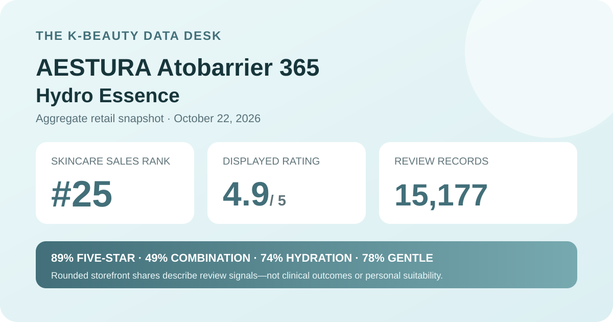
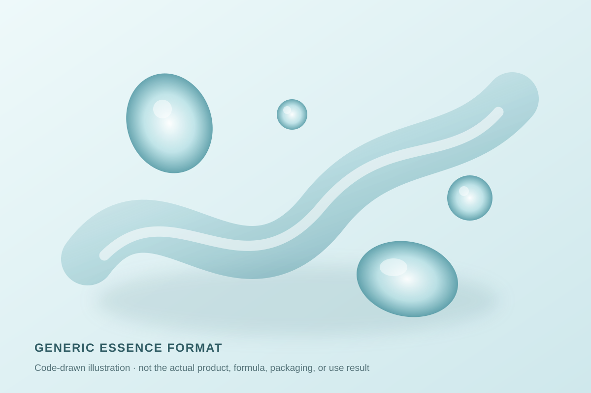

Data captured October 22, 2026. This analysis uses only a Korean K-beauty retail platform's displayed aggregate rating, star shares, anonymous shopper polls, and retailer-level automated theme summary. It does not reproduce or translate individual review text, names, or photos.

The short version: The listing showed 4.9 out of 5 from 15,177 review records. Five-star selections accounted for 89% of the displayed rating distribution. Combination and dry skin were both strongly represented, hydration led the concern poll, and 78% selected the gentle response. These are retail signals, not measured skin outcomes.
The visible average was 4.9 stars. The product header displayed 15,177 review records, and the detailed review panel repeated the same count and average. That match matters because it prevents a current score from being combined with a count belonging to another AESTURA product, another pack configuration, or an older page snapshot.
The detailed panel displayed these rounded shares:
The rows add to 99%, which is consistent with whole-number rounding but not enough to reconstruct exact counts. Zero-percent rows can also hide a very small number of selections after rounding. The defensible conclusion is that the displayed distribution leans strongly positive, not that every reviewer gave a high score or that the essence works for every user.
Review volume adds context because 15,177 records are less vulnerable to a handful of unusual ratings than a page with only a few entries. It does not remove selection bias, promotional effects, changing package configurations, or differences in use duration. A storefront average remains a satisfaction signal rather than a controlled comparison.
The displayed skin-type poll showed 49% combination, 45% dry, and 6% oily. The two leading groups are close, so this snapshot represents a mixed combination-and-dry audience more than a single dominant skin-type lane.
That distribution answers who selected each label. It does not show that the essence produced a stronger result for combination or dry skin. Self-reported skin type can change with climate, season, cleansing, medication, other routine steps, or the respondent's own definition. The poll also does not reveal whether this product was the only change in a routine.
The concern poll displayed 74% hydration, 26% soothing, and 1% wrinkle or brightening concern. Those rounded shares total 101%, a reminder that the interface reports whole percentages rather than exact respondent counts.
Hydration's lead makes the dataset relevant to readers researching an essence for a moisture-focused routine. It does not measure skin water content, transepidermal water loss, barrier repair, dryness severity, or duration of effect. A concern selection can describe why someone approached the product; it is not a before-and-after measurement.
The irritation poll showed 78% gentle, 21% ordinary, and 1% felt irritation. The gentle response is the clear leader, but the other two rows should not disappear from interpretation. Together they show that the interface does not support an “irritation-free” claim.
This poll is self-reported and rounded. It does not control for application frequency, damaged skin, concurrent actives, allergy history, or regional formula changes. Someone with a history of reactions should rely on the current label and appropriate professional advice rather than treating a crowd poll as a personal tolerance test.
K-beauty retail's automated recent-review summary labeled 92% of its analyzed subset as positive. It grouped discussion into broad themes around moisture and reduced feelings of tightness, mild-feeling use, and spreadability or quick absorption. Those clusters are retailer-generated navigation cues, not results from all 15,177 records.
This article does not reproduce or translate the underlying reviews. It also does not promote the generated wording into product facts. A moisture theme is not an instrument reading, a mildness theme cannot guarantee tolerance, and an absorption theme does not define how the formula will behave under every sunscreen or makeup product.

The retailer places this item in its essence, serum, and ampoule category and names it a hydro essence. In general format terms, an essence is a leave-on liquid or light emulsion typically used between watery steps and richer creams. That broad category description does not reveal this product's exact viscosity, scent, slip, absorption speed, residue, or compatibility with another routine.
I did not handle or apply this product. The illustration above is intentionally generic and should not be read as a reconstruction of the real color, thickness, ingredients, or skin finish. Current usage directions, precautions, and the regional ingredient list should come from the product in hand rather than from a format illustration or crowd rating.
At capture, the Korean listing showed a ₩32,000 reference price and a ₩24,500 promotional price for a 200 ml essence with 10 ml cream and 10 ml ampoule extras named in the title. That is a dated retail snapshot, not a standing value claim.
Price, coupons, gifts, stock, seller, and pack contents can change. Review records may also span earlier prices or package presentations rather than only the configuration visible on October 22. Before comparing cost per use, verify the current quantity, included extras, checkout total, regional label, and return terms.
The narrow, defensible reading is that this was the first distinct unpublished product after 24 higher-ranked listings were excluded for existing coverage; it held rank 25; its header and review panel agreed on a 4.9 average across 15,177 records; the displayed ratings were concentrated in five-star selections; combination and dry skin were both well represented; hydration led the concern poll; and the gentle response led the irritation poll.
Those signals make the page useful for comparing large-review essence datasets and current Korean retail activity. They do not justify calling the product clinically hydrating, barrier-repairing, universally gentle, or certain to suit combination or dry skin. The appropriate next step is to verify the current regional label and directions, consider individual tolerance history, and seek qualified guidance when a medical skin concern is involved.
Combination skin was the largest displayed skin-type response at 49%, followed by dry skin at 45% and oily skin at 6%. That describes poll representation, not proven suitability or a guaranteed result.
Hydration led the displayed concern poll at 74%, but a shopper-selected concern is not a hydration measurement or proof of a product effect.
The captured irritation poll showed 78% gentle, 21% ordinary, and 1% felt irritation. These rounded self-reported shares cannot predict individual tolerance.
The listing identifies an essence format. This analysis did not apply the product and does not claim a specific viscosity, scent, absorption speed, finish, or layering behavior.
It is a rounded retail satisfaction signal across 15,177 linked records. It is not a clinical trial, proof of efficacy, or a prediction for one person's skin.
Source: Olive Young Korea product page, captured October 22, 2026. Product title, ranking, pack, price, rating, review count, star shares, poll values, and automated summary can change.
Published by The K-Beauty Data Desk. The source does not independently verify every buyer's identity, and this page is an editorial analysis of retailer-displayed aggregates—not medical advice or a substitute for the current product label.
← All reviews · Review-volume rankings · Skin-poll explorer · Methodology